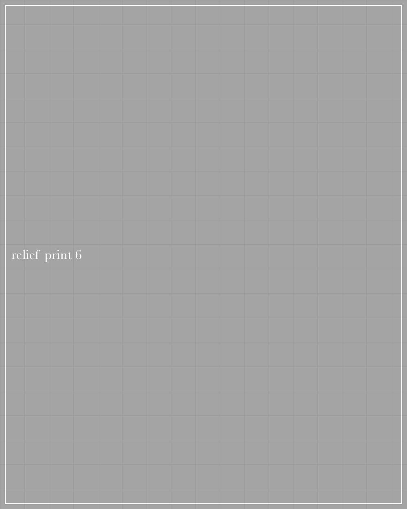

Relief printing
My linocut pieces are designed, drawn, cut and printed by hand. I discovered linocut printing in 2023 and haven't looked back.
Linocut on Somerset Satin 300gsm, 2026 · 297 × 420 mm
Linocut on Somerset Satin 300gsm, 2026 · 420 × 297 mm
Linocut on Somerset Satin 300gsm, 2026 · 300 × 300 mm
Linocut on Somerset Satin 300gsm, 2025 · 297 × 420 mm
Linocut on Somerset Satin 300gsm, 2025 · 420 × 297 mm

Linocut on Somerset Satin 300gsm, 2025 · 240 × 300 mm